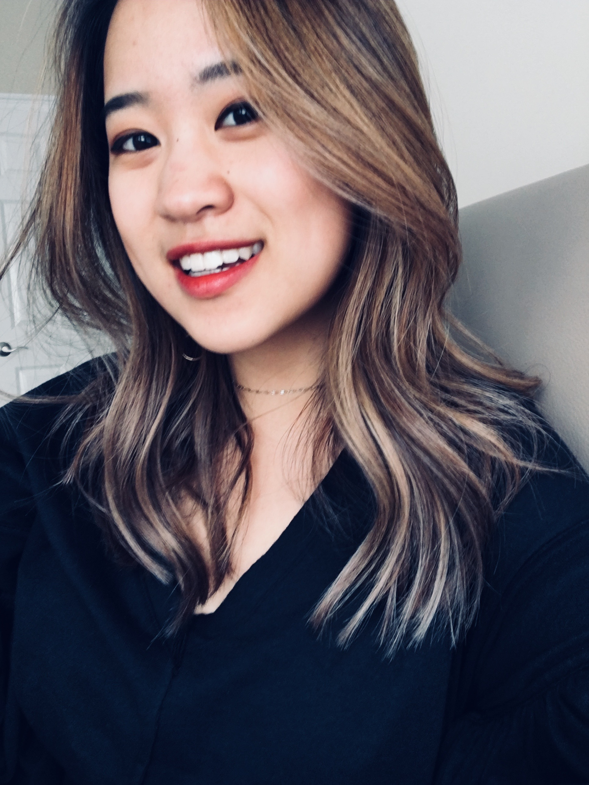

Goals to Accomplish This Summer

This summer, I will be staying in St. Louis, participating in the Less Annoying CRM Coding Fellowship program.
Over the next two months, we'll be learning the basics of building a website and hopefully get to build our own.
As I work here at LACRM, I hope to accomplish some other goals outside of just work and premed, learning to
destress and have some fun exploring this summer!!
Besides making a website, I'm determined to utilize this summer and make the most out of the short break that I have.
As a bunch of my friends happen to be staying here this year, we've basically made a bucket list of things that we
want to do this summer.
- Get my doubles pierced
- Six Flags
- Go to Chicago
- Exercise at least 4 times a week
- Go stargazing
- Get my driver's licensce
- Marvel Marathon
- Travel with June to Boston
Although there really is not a huge chance that I'll be able to get all of this done along with working a full 9-5 job, working part time at Kayaks, and taking MedPrep II - although it is still up for grabs - I hope to at least get some fun time in with friends!!
About Me

ATL | STL | WashU 2020
PreMed Student Withering Away
Hoping to one day get my life together and be a functioning human being!!